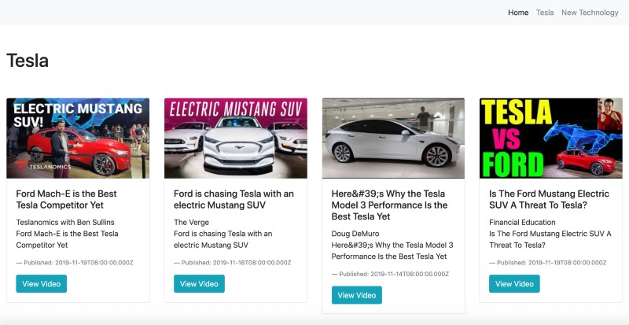
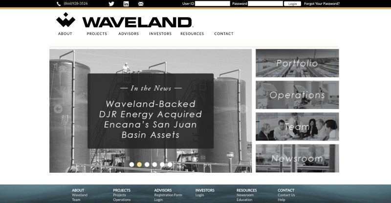

This project utilizes the
Google API to retrieve video data from YouTube. The data is saved to a
AWS Cluster using
MongoDB Atlas and displayed using
Express. Private keys are stored
using
Node dotenv and custom objects created to handle the Google API and MongoDB.
source code: https://github.com/johnnyintheoc/Node-Restful-API
NodeJS, Express, MongoDB Atlas, Google API



For this project a
MySQL database was used to store data. YouTube video data was obtained using
the
Google API library. All data was generated on the server side using
Node, and
React for
the client side pages.
source code: https://github.com/johnnyintheoc/react-app
Node, React, Google API, MySQL


This project demonstrates simple routing using
Node and
React. It uses a public
API that returns
JSON data, which is then extracted and displayed to the pages.
source code: https://github.com/johnnyintheoc/react-app
API from splashbase.co
Node, React, JSON API

This project shows how to set up a dynamic webserver using
Node and
Express, and how to
handle
GET/POST requests. It uses
MySQL for saving and displaying data to the web pages.
source code: https://github.com/johnnyintheoc/nodejs-express
Node, Express, method-override, body-parser, MySQL
A simple lightbox implementation using
JQuery and
CSS3. Click on an image.
Images randomly generated from http://source.unsplash.com
JQuery, HTML5, CSS3


This is a simple and fun
JQuery animation with
CSS3 implementation. Enter a message into the
text box and press enter.
JQuery, HTML5, CSS3

This is a full dynamic
PHP website that uses
Sessions for allowing clients to login and to view
their online data. It uses
MySQL for maintaining data with encryption around the passwords and sensitive data.
This site further uses
AES 256 data encryption for files and has a backend dashboard for maintaining membership data.
website: www.wavelandgroup.com
PHP, JQuery, MySQL, Sessions, Data Encryption
This project involved creating a private members only messageboard, with a similar facebook look and style.
This messageboard allowed members of the company to communicate, receive notifications through emails on new
postings and replies, and to upload documents for sharing. It uses
PHP with
Sessions and a
MySQL database.
website: http://noteboard.wavelandgroup.com
PHP, JQuery, MySQL, Sessions
This project required integrating the
Zoho V2 API into the client website for searching and modifying
Zoho data. A custom
PHP class file was created to handle the Zoho Auth Token authentication along with
search, add, remove, and modify features. It further required integrating this into another API called
Bluehornet maintaining it's data as well.
website: www.wavelandgroup.com
PHP, MySQL, Zoho V2 API, Bluehornet API (Aka. Mapp Cloud API)
Mapp Cloud API (formally Bluehornet API) is an email marketing platform. Client data was
integrated into this platform by creating a custom
PHP class file to handle the methods provided
by Bluehornet, which included bulk data uploads, client data additions, modifications, and deletion.
These processes were run on the backend server of the client website.
website: http://www.wavelandgroup.com
PHP, MySQL, VBA